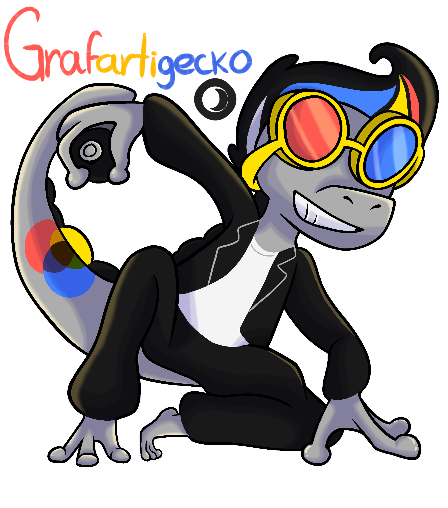

Un dibujo de un Fakemon (pokemon no oficial de pokemon)que hice para un concurso de un yotuber famoso.
datos tecnicos y curiosos: Este Fakemon esta inspirado en 3 cosas, una lagartija de casa, un roquero o tipo rudo del musical Vaselina, y pinturas, especificamente grafiti, osea arte callejero, en el concurso, teniamos que hacer un Fakemon para ser la evolucion de otro Fakemon, con limitaiones explicitas, como ser algun tipo de reptil y no explicitas, como tener un solo tipo y tener alguna relacion y coherencia visual con el Fakemon que el Yotuber nos dio para que nos basaramos.